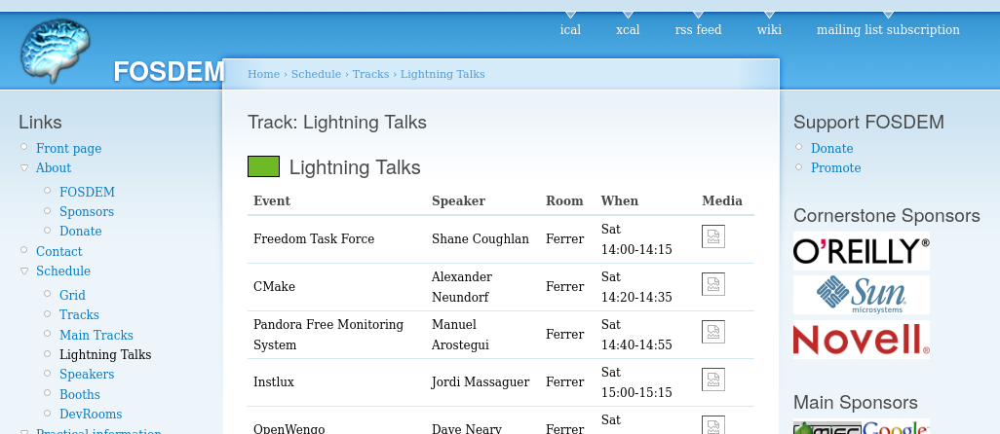
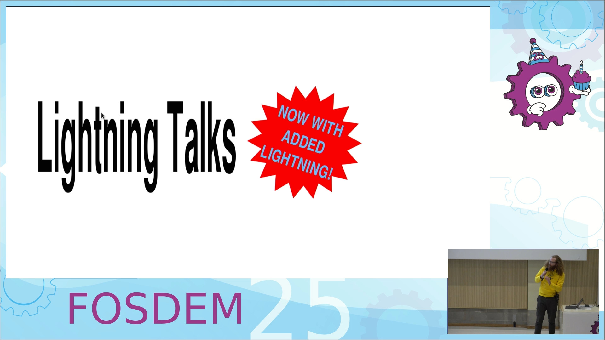

For the last few years I've been running the lightning talk track at FOSDEM.
This track contains a series of 15 minute talks separated by 5 minute breaks all day, a format which has been mostly unchanged since its first introduction in 2007, 18 years ago:
There are some advantages to this format:
- listing each talk in the schedule allows people to attend a single talk which interests them, then leave
- 5 minute gaps between talks allow for more tolerance towards technical difficulties
- can be handled like any other talk in the program
And some (subjective) disadvantages:
- different from what people would expect "lightning talks" to mean compared to other events
- 15 minutes is actually quite a long time, and preparing a good talk of this length requires some effort
- more effort makes it harder to spontaneously prepare a talk, and riskier to accept a hastily prepared talk into the schedule
- some speakers prepare a talk which takes less than 15 minutes, so someone watching a series of talks might see 10 minutes of talk, followed by 10 minutes of gap before the next talk
For better or for worse, the average talk length at FOSDEM has also been steadily decreasing over the years. If we extrapolate this trend into the future, talks in the current lightning talk track will at some point be longer than the average talk elsewhere!
This clearly makes the case for something which contains even more lightning than the usual lightning talks.
For FOSDEM 2025, I wanted to make something with the following goals:
- A single session with no downtime
- Felt spontaneous
- Entertaining to watch
- Low bar for entry
Normally this kind of session at a conference would just be called "lightning talks", but we already have the existing lightning talks track which wouldn't be changing this year.
Since the main difference between them is the quantity of lightning involved, I named it Lightning Lightning Talks instead.
The software
To run this session, something needed to:
- Let people submit talk proposals with slides attached
- Review and accept some talks
- On the day of the session, grab the slides for accepted talks
- Display a title screen to make sure the right speaker starts speaking
- Display presentation slides
- Count how long a speaker has left
- Move to the next talk once time has run out
The first two points are covered by pretalx, the tool used for all the normal proposal management at FOSDEM. The only complication was making it easy to get the list of accepted talks and the attached slides. This ended up being a new track in pretalx, and also a new proposal type to make filtering using the pretalx API possible.
A tool could then be written to query the API for the data about talks and write an intermediate config file describing the required info for the upcoming session. Since there's a much higher chance of changes at the last minute (for example some speakers not turning up), keeping the info for the session in a format which could be quickly edited by hand was important. It also removes a hard dependency on our pretalx deployment, so the session can run even if pretalx is down for some reason.
This file is a fairly unexciting .json file, and looks about the same as you would expect:
[
{
"title": "Zagreb City case study: How to foster open data with public money",
"speakers": "Aleksandar Gavrilovic",
"slides_url": "https://pretalx.fosdem.org/media/fosdem-2025/submissions/8NP3TN/resources/Zagreb_Ca_ryBYjbT.pdf",
"slides_name": "Zagreb_Ca_ryBYjbT.pdf",
"created": "2025-01-20T09:32:48.352004+01:00"
},
{
"title": "A Card Game for you techies",
"speakers": "Thierry Berger",
"slides_url": "https://pretalx.fosdem.org/media/fosdem-2025/submissions/DXRMQC/resources/pitch_kln5nRa.pdf",
"slides_name": "pitch_kln5nRa.pdf",
"created": "2025-01-28T09:29:02.942777+01:00"
},
I wrote a custom presentation tool which reads this .json and uses it to display a neat title screen for each talk followed by the slides provided by each speaker. This uses GTK for the main application and Pango + Cairo to render most of the graphics.
To annoy everyone equally (except LaTeX users) I required slides in .pdf format, which meant I needed to render pages from them for the main presentation content. For this I used Poppler [1], which ended up being pretty easy to implement (except for spending a bit too long figuring out why a particular presentation wasn't rendering correctly before I found out pdf documents could be transparent and I was rendering on a black background).
Most of the time developing this tool probably went into making the title screen look nice, with a pleasing ease in function (quint, 1 − (1 − t)5) animating the FOSDEM cog pulling the title on to the screen:
A second window shows the time remaining for the current speaker, which can be displayed on a secondary monitor:
To make sure speakers don't overstay their welcome on the stage, the system needs to move them on. For lightning talks elsewhere, this is often done with a separate timer and social pressure to stop. Since this custom presentation tool knows how long the current speaker has taken and the order of talks, it can immediately start the next talk once the time has run out.
When the time left reaches 10 seconds, the countdown screen starts flashing in warning, while the presentation slides slowly fade out to the title screen and the next talk begins automatically:
Code for this tool is available at https://github.com/kragniz/fosdem-lightning-talk-presenter
| [1] | As luck would have it, there was a lightning talk at FOSDEM this year about Poppler: https://fosdem.org/2025/schedule/event/fosdem-2025-6000-poppler-the-pdf-rendering-library/ |
People logistics
Despite planning the actual presentation display and submission system, I hadn't fully planned the logistics of people moving around until the evening before the session. This meant quickly working out a system to make sure speakers could smoothly flow from one talk to the next.
With the help of some volunteers who were assisting with running the session on the day, we thought through a few options and settled with:
- Printing off the talk schedule, and giving a copy to each speaker just in case the order is forgotten
- Sitting speakers n-3 in a row of audience seats in the same order as their position in the talk schedule
- Using two seats at the side of the stage as a staging area (#1 containing the next speaker, and #2 containing the speaker after next)
- Using two handheld microphones (one held by the current speaker, one held by the next speaker)
On a talk ending, everybody swaps to a new position simultaneously:
- Speaker leaves the stage, handing their microphone to the person in staging area seat #2
- Person in the #1 staging area seat takes to the stage and begins their talk
- Person in staging area seat #2 moves to seat #1
- Person in the rightmost seat in the audience row moves to staging area seat #2
- All other speakers sitting in the audience row move one seat to the right
This ended up worked pretty smoothly. There was a contingency plan in case a speaker carried on talking after their time ran out involving a volunteer threateningly wielding a brush and sweeping them off the stage, which (somewhat unfortunately, since it would have been entertaining) never needed to be deployed.
How it went
I was really pleased with how this worked out in the end. Running a session which relied on custom presentation software and a large number of speakers had the potential for some unforeseen disaster, which had made me a bit anxious. No disasters took place, and feedback has been nice.
You can watch the recording here:
The talks were good. Someone was enthusiastic about isopods:
Future
I'd like to make some changes if we run something similar next time:
- I'd like to encourage more random and fun topics
- 5 minutes is still quite a long time! In a 50 minute session we can only fit 10 talks if everyone takes the maximum time. Maybe next time the limit could be 3 minutes.
- A bigger display showing the countdown visible from the audience would be nice
- Make sure no mouse cursor is drawn over slides
- The countdown should start as soon as the title screen is shown
- A remote control to skip to the next presentation would be good, some speakers forgot to complete their slides all the way to the end, so the next speaker needed to skip forward a bit awkwardly
- Shuffling all speakers one seat over was necessary because all the seats in this room have built in desks which make getting in and out of a row awkward unless you are sitting right at the end. Obtaining extra chairs to make an additional row of seats at the font would avoid needing to do this.
- The submission process needs to be smoother. The extra track and submission type was confusing in the pretalx UI.
- The submission deadline and status needs to be communicated better. I was originally worried about not getting enough proposals, but ended up getting too many. I closed submissions early since I didn't want people to spend time working on a presentation if all the spaces were taken, but this (quite rightfully) annoyed some people since they thought there would still be time to submit a talk
I originally wanted to make talk order random out of a pool of people who registered as speakers before the session begins. However this felt a bit too risky for a first try. Perhaps some element of this could be introduced next time?
Hopefully Lightning Lightning Talks will return next time (maybe with a name change)!